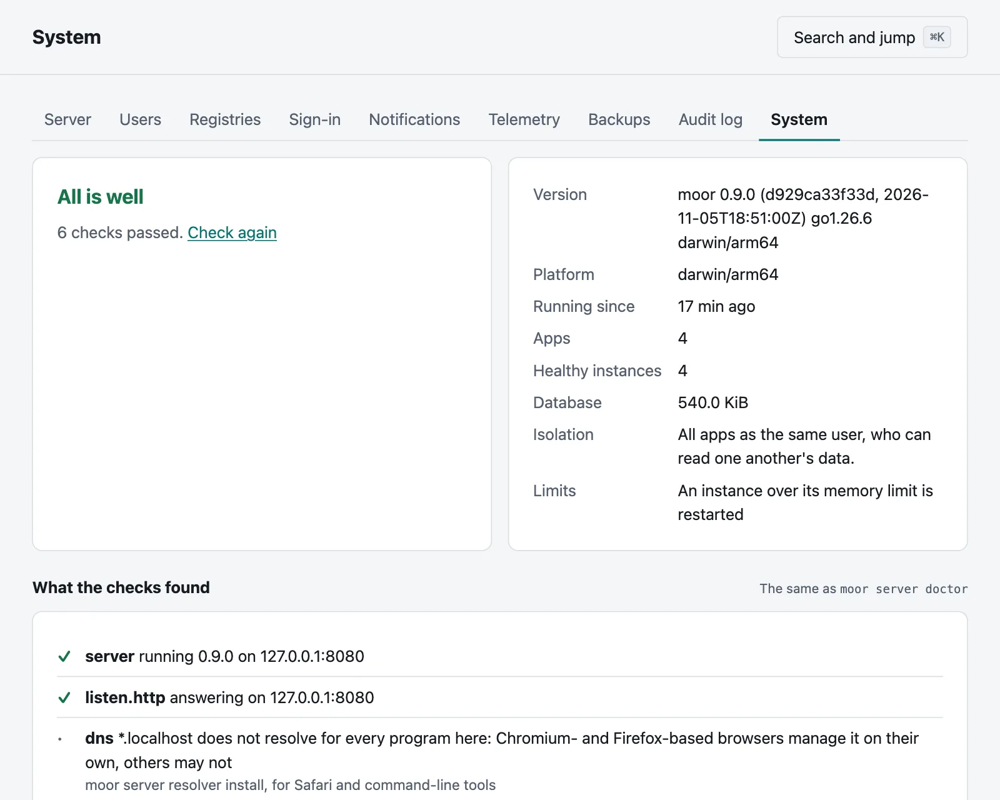
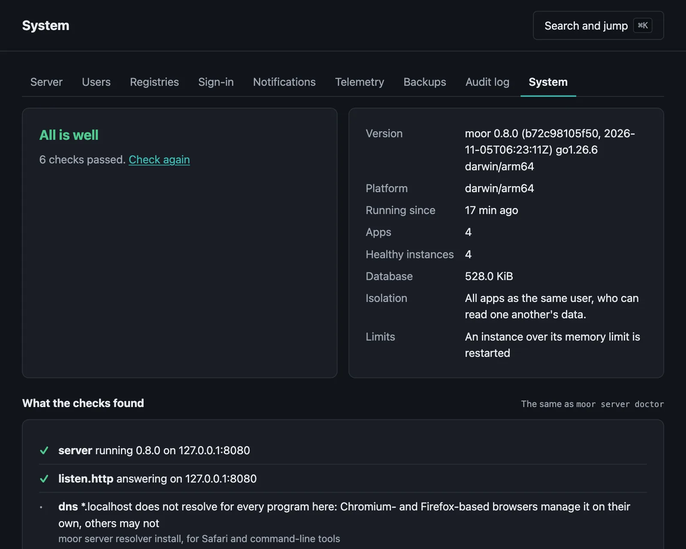
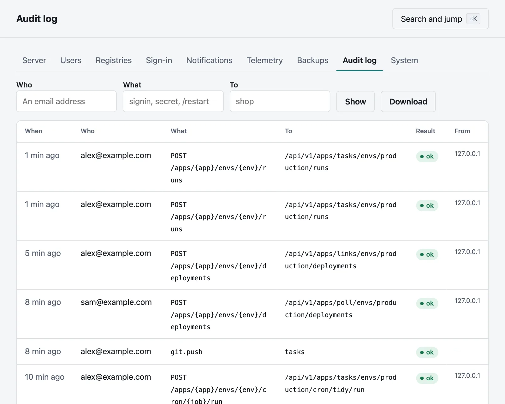
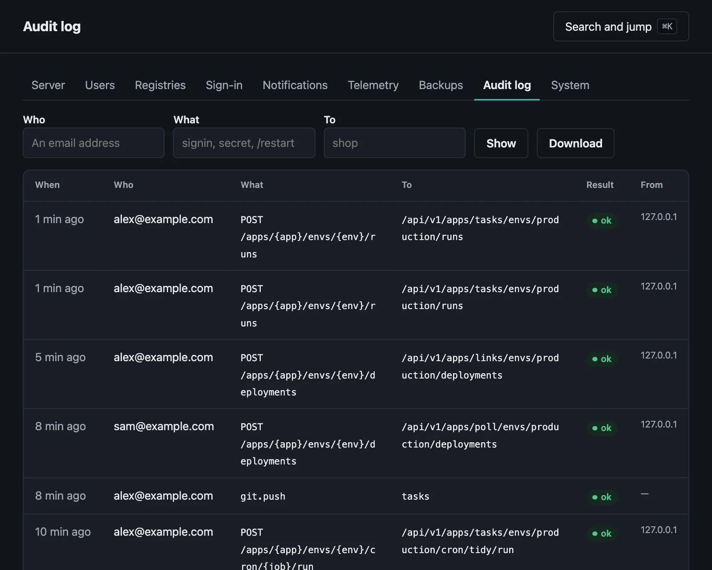

Running a server
What to look at, what to set up in the first week, and what to do as it grows.
On this page
Moorage asks little of whoever runs it. This page says what to set up in the first week, what to look at after that, and what changes as a server grows. Installing Moorage comes first.
The first week#
Check it.
moor server doctorlooks at the server and what it depends on, and says how to fix what it finds.sudo moor server doctorDecide about TLS, if you have not. An intermediate from your company's CA means nobody has to trust anything by hand.
Keep apps apart. On a shared Linux server, run as root and use
level = "user"or"sandbox"in[isolation].moor server doctorand the System page say what you have. How apps are kept apart says what each gives you.Add people. Give most people a role in a project, and only a few the administrator's. Accounts and access says how, and How people sign in connects your identity provider.
Back up. Set a schedule in Settings → Backups, and keep
keys/master.keysomewhere apart: without it, the secrets in a backup cannot be read, and with it, anyone can. Then try a restore. See Backups.Be told. Add a channel and a rule in Settings → Notifications, so that a failed deployment, a crash loop, a failed cron job, a full disk or a failed backup reaches someone. See Notifications.
Close the ports you do not use. Moorage needs its HTTP and HTTPS ports, and the SSH port if you push over SSH. Apps are told to listen on loopback, and
moor server doctorwarns of one that can be reached another way.
What to look at#
The console's Settings → System has what the server runs, and what the checks find:


From the command line:
moor server statussudo moor server doctormoor events -fWho did what is in the audit log, for a year: each change, sign-in, secret revealed and git push, with who and how it went, and where from for all but pushes. Settings → Audit log searches and downloads it, and moor audit shows it.


How it is doing is in metrics, for Prometheus as well as the console, and can go on to an OpenTelemetry collector.
The server's health answers at /.moorage/health on every hostname, for whatever watches your machines.
Where the disk goes#
Everything is under the data directory, in plain files you can look at:
| Folder | What it holds | What limits it |
|---|---|---|
moorage.db | The database | Grows slowly. Events go after 90 days, the audit log after a year |
repos | Apps' git repositories | The size of their history |
builds | Builds, and uploads for redeploying | keep_releases in each manifest: five by default |
data | Apps' own data | The apps. Moorage keeps nothing of its own here |
logs | Apps', deployments' and the server's logs | Rotation at 10 MiB, five files back, and 14 days for stopped instances. Deployments' logs stay until their app or environment goes |
toolchains, cache | Toolchains and build caches | One copy of each version, shared by every app |
backups | Database copies before each migration, and backups if you send them there | The last three migrations; your schedule's keep |
keys, certs | The master key, SSH host keys and the CA | Small. Back up keys apart |
moor server doctor looks at free space, and a server tells those concerned when the data volume passes disk_percent in [notifications], 90% by default.
Deleting an app removes its builds, logs and repository, and its data unless you keep it. Previews remove themselves when their branch goes, or after seven days unused.
As it grows#
- Let environments sleep. An environment asleep uses no memory until a request wakes it, which is why a server can hold far more environments than it could run at once. How big a machine has what we measured.
- Limit what apps can use.
[resources]in a manifest limits an instance's memory and CPU. They are enforced on Linux when the server runs as root with cgroup v2, and on Windows. Elsewhere, an instance over its memory limit is restarted. - There is one machine. Moorage does not spread apps over several, and no version so far does. When a server is full, move some apps to another with a backup and a restore, or with their source.
Stopping and restarting#
Apps do not depend on the server being up. Stopping, restarting or upgrading it leaves them running and serving what is in flight, and it takes them over again when it starts.
sudo moor server restartsudo moor server stopTo stop the apps too, whether or not the server is running:
sudo moor server stop --allWhen something is wrong has more on that.
Upgrading#
sudo moor server upgradeIt checks what it downloads, keeps a copy of the database and of the binary, and goes back by itself if the new version does not come up. See Upgrading.
A checklist for a shared server#
- Isolation at
userorsandbox. - An intermediate CA or a certificate of your own, and not a root that everyone trusts by hand.
- The console on its own hostname, which is the default.
- Behind a proxy, the HTTP listener on loopback or a private address, and only the proxy's addresses in
[proxy] trusted. - Few administrators, and two-factor sign-in or single sign-on for them.
- Previews behind
login, which is the default. keys/master.keybacked up, and apart from your backups.- A restore tried.
- A firewall in front of everything but the ports above.
- API tokens limited to one app and a scope, with an expiry, for each script.
Security says what these protect against, and what they do not.